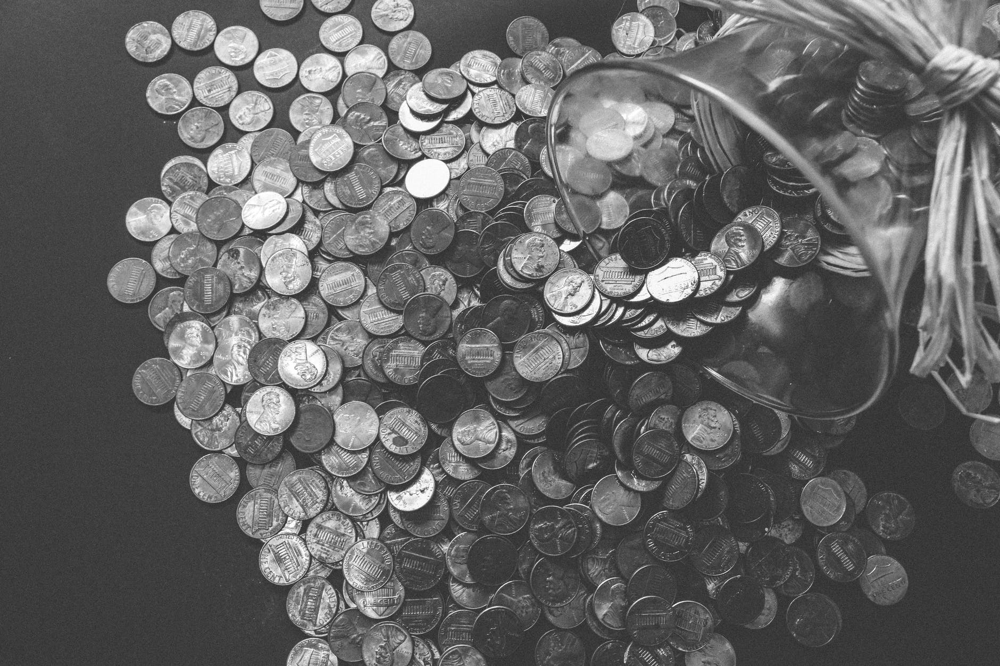

This is a digital space where I share data science projects that I have worked on. I'm a law graduate with banking & legal background, passionate about tech and mechanical keyboards. As someone who believes in constant self development & investment, I constantly look for exciting opportunities to further hone my skills.
You may reached me at Linkedin.
Have a nice day!

Banks are not immune to customer churn. This project aims to identify factors leading to customer churn and provide insights & patterns based on machine learning model.